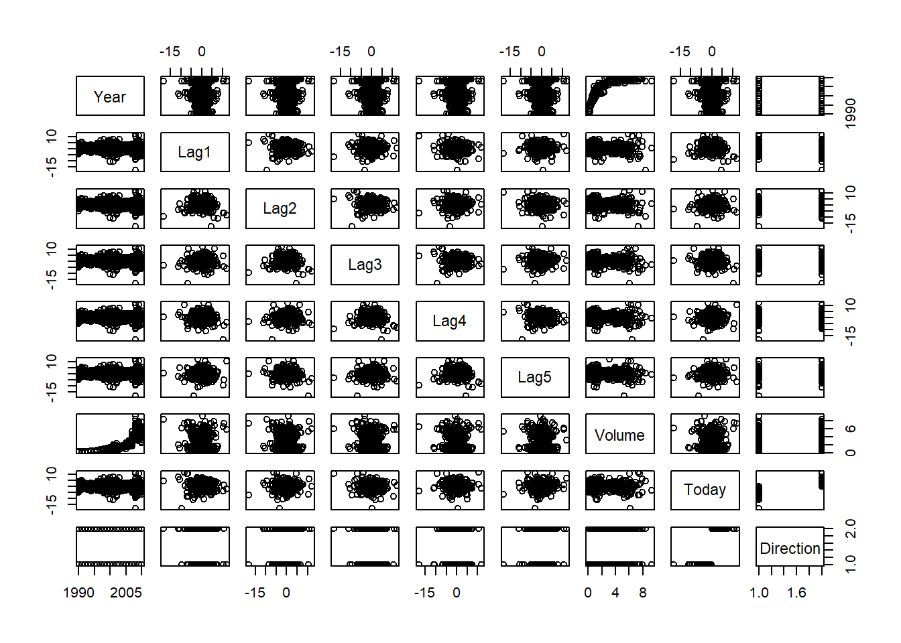
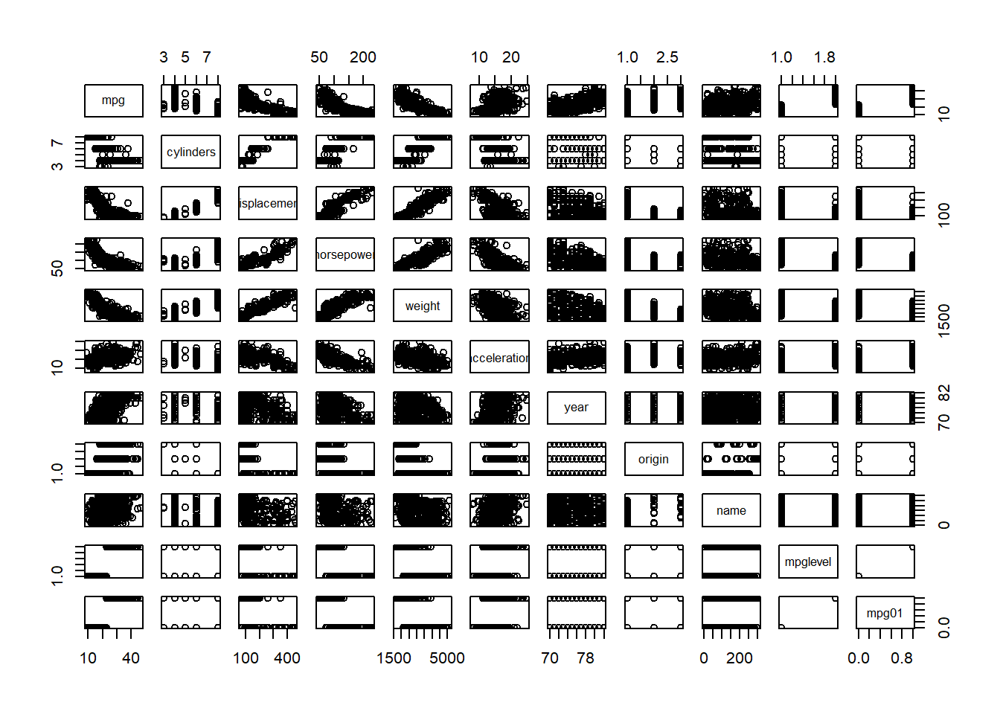
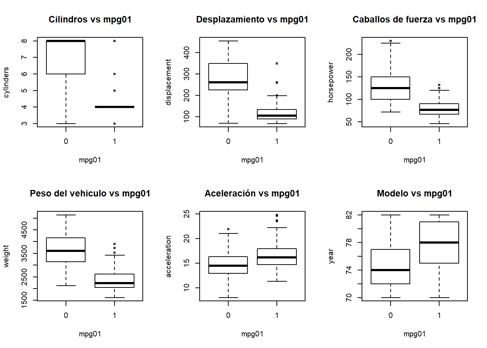
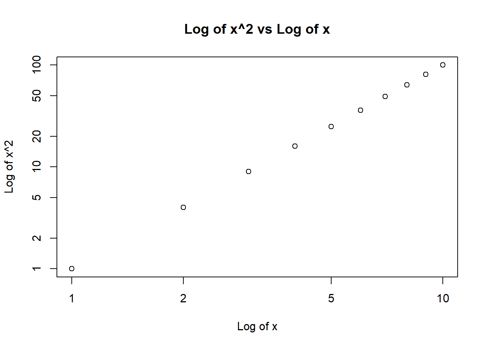

Punto 10
Esta pregunta debe responderse utilizando el conjunto de datos semanal, que es parte del paquete ISLR. Estos datos son similares en naturaleza a Datos de mercado del laboratorio de este capítulo, excepto que contiene 1.089 devoluciones semanales durante 21 años, desde principios de 1990 hasta finales de 2010.
(a) Produzca algunos resúmenes numéricos y gráficos de los datos en Weekly. ¿Parece haber algún patrón?
## Warning: package 'ISLR' was built under R version 3.6.3## Year Lag1 Lag2 Lag3
## Min. :1990 Min. :-18.1950 Min. :-18.1950 Min. :-18.1950
## 1st Qu.:1995 1st Qu.: -1.1540 1st Qu.: -1.1540 1st Qu.: -1.1580
## Median :2000 Median : 0.2410 Median : 0.2410 Median : 0.2410
## Mean :2000 Mean : 0.1506 Mean : 0.1511 Mean : 0.1472
## 3rd Qu.:2005 3rd Qu.: 1.4050 3rd Qu.: 1.4090 3rd Qu.: 1.4090
## Max. :2010 Max. : 12.0260 Max. : 12.0260 Max. : 12.0260
## Lag4 Lag5 Volume
## Min. :-18.1950 Min. :-18.1950 Min. :0.08747
## 1st Qu.: -1.1580 1st Qu.: -1.1660 1st Qu.:0.33202
## Median : 0.2380 Median : 0.2340 Median :1.00268
## Mean : 0.1458 Mean : 0.1399 Mean :1.57462
## 3rd Qu.: 1.4090 3rd Qu.: 1.4050 3rd Qu.:2.05373
## Max. : 12.0260 Max. : 12.0260 Max. :9.32821
## Today Direction
## Min. :-18.1950 Down:484
## 1st Qu.: -1.1540 Up :605
## Median : 0.2410
## Mean : 0.1499
## 3rd Qu.: 1.4050
## Max. : 12.0260Matriz de dispersión:

Matriz de correlación:
## Year Lag1 Lag2 Lag3 Lag4
## Year 1.00000000 -0.032289274 -0.03339001 -0.03000649 -0.031127923
## Lag1 -0.03228927 1.000000000 -0.07485305 0.05863568 -0.071273876
## Lag2 -0.03339001 -0.074853051 1.00000000 -0.07572091 0.058381535
## Lag3 -0.03000649 0.058635682 -0.07572091 1.00000000 -0.075395865
## Lag4 -0.03112792 -0.071273876 0.05838153 -0.07539587 1.000000000
## Lag5 -0.03051910 -0.008183096 -0.07249948 0.06065717 -0.075675027
## Volume 0.84194162 -0.064951313 -0.08551314 -0.06928771 -0.061074617
## Today -0.03245989 -0.075031842 0.05916672 -0.07124364 -0.007825873
## Lag5 Volume Today
## Year -0.030519101 0.84194162 -0.032459894
## Lag1 -0.008183096 -0.06495131 -0.075031842
## Lag2 -0.072499482 -0.08551314 0.059166717
## Lag3 0.060657175 -0.06928771 -0.071243639
## Lag4 -0.075675027 -0.06107462 -0.007825873
## Lag5 1.000000000 -0.05851741 0.011012698
## Volume -0.058517414 1.00000000 -0.033077783
## Today 0.011012698 -0.03307778 1.000000000Entonces, en la primera matriz se encuentran las variables con las que se procede a trabajar, observando que todas se encuentran en una misma escala, exceptuando la variable dirección, pues esta posee dos niveles denominados alto y bajo.
Luego, en la segunda matriz en las variables lag1,lag2,lag3,lag4,lag5 y volumen, se observa que las observaciones se encuentran ubicadas en el centro.
Adicionalmente, respecto al comportamiento de las variables se observa que la variable tiempo es polinomial a medida que aumenta el tiempo.
Finalmente, en el gráfico se evidencia que la correlación mas evidente es entre las variables “year” y “volume”, pues el volumen aumenta a través del tiempo.
(b) Utilice el conjunto de datos completo para realizar una regresión logística con Direction como respuesta y las cinco variables de retraso más Volumen como predictores Use la función de resumen para imprimir los resultados. Hacer ¿Alguno de los predictores parece ser estadísticamente significativo? Si es así, ¿cuáles?
El modelo de regresión logístico ajustado es:
##
## Call:
## glm(formula = Direction ~ Lag1 + Lag2 + Lag3 + Lag4 + Lag5 +
## Volume, family = "binomial", data = Weekly)
##
## Deviance Residuals:
## Min 1Q Median 3Q Max
## -1.6949 -1.2565 0.9913 1.0849 1.4579
##
## Coefficients:
## Estimate Std. Error z value Pr(>|z|)
## (Intercept) 0.26686 0.08593 3.106 0.0019 **
## Lag1 -0.04127 0.02641 -1.563 0.1181
## Lag2 0.05844 0.02686 2.175 0.0296 *
## Lag3 -0.01606 0.02666 -0.602 0.5469
## Lag4 -0.02779 0.02646 -1.050 0.2937
## Lag5 -0.01447 0.02638 -0.549 0.5833
## Volume -0.02274 0.03690 -0.616 0.5377
## ---
## Signif. codes: 0 '***' 0.001 '**' 0.01 '*' 0.05 '.' 0.1 ' ' 1
##
## (Dispersion parameter for binomial family taken to be 1)
##
## Null deviance: 1496.2 on 1088 degrees of freedom
## Residual deviance: 1486.4 on 1082 degrees of freedom
## AIC: 1500.4
##
## Number of Fisher Scoring iterations: 4De lo anterior, se observa que unicamente la variable Lag2 con un P-valor de 0.0296 es estadisiticamente significativa con un nivel de confianza de 0.05.
(c) Calcule la matriz de confusión y la fracción general de la correcta predicciones Explica lo que te dice la matriz de confusión sobre los tipos de errores cometidos por la regresión logística.
Matriz de confusión asociada es:
##
## pred Down Up
## Dow 54 48
## Up 430 557Con esta tabla de confusión y los datos de prueba, podemos concluir que el porcentaje de acierto en la prediccion es de 56.10% del tiempo . Entonces, la tasa de error de los datos de entrenamiento es de 43.8%. Tambien apreciamos que cuando el mercado sube.
Adicionalmente, se puede concluir que cuando el mercado sube el modelo acierta en un 92% y cuando por el contrario, el mercado baja, el modelo acierta en un 11.15% el tiempo.
(d) Ahora ajuste el modelo de regresión logística usando un período de datos de entrenamiento desde 1990 hasta 2008, con Lag2 como el único predictor. Calcular el matriz de confusión y la fracción general de predicciones correctas para los datos retenidos (es decir, los datos de 2009 y 2010).
Modelo ajustado usando Lag2 como único predictor:
##
## Call:
## glm(formula = Direction ~ Lag2, family = binomial, data = train)
##
## Deviance Residuals:
## Min 1Q Median 3Q Max
## -1.536 -1.264 1.021 1.091 1.368
##
## Coefficients:
## Estimate Std. Error z value Pr(>|z|)
## (Intercept) 0.20326 0.06428 3.162 0.00157 **
## Lag2 0.05810 0.02870 2.024 0.04298 *
## ---
## Signif. codes: 0 '***' 0.001 '**' 0.01 '*' 0.05 '.' 0.1 ' ' 1
##
## (Dispersion parameter for binomial family taken to be 1)
##
## Null deviance: 1354.7 on 984 degrees of freedom
## Residual deviance: 1350.5 on 983 degrees of freedom
## AIC: 1354.5
##
## Number of Fisher Scoring iterations: 4Matriz de confusión:
##
## pred2 Down Up
## Dow 9 5
## Up 34 56Con esta tabla de confusión y los datos del conjunto de preuba, se puede concluir que el porcentaje de acierto en la prediccion es igual al 62.5% del tiempo. La tasa de error con los datos del conjunto de prueba es de 37.5%.
(e) Repita (d) usando *LDA
Modelo ajustado usando LDA:
## Call:
## lda(Direction ~ Lag2, data = train)
##
## Prior probabilities of groups:
## Down Up
## 0.4477157 0.5522843
##
## Group means:
## Lag2
## Down -0.03568254
## Up 0.26036581
##
## Coefficients of linear discriminants:
## LD1
## Lag2 0.4414162Matriz de confusión:
##
## Down Up
## Down 9 5
## Up 34 56Con esta tabla de confusiónn y los datos del conjunto prueba, se concluye que el porcentaje de acierto en la prediccion es igual a 62.5% del tiempo. La tasa de error con los datos del conjunto de prueba es de37.5%.
Adicionalmente se observa que cuando el mercado sube el modelo acierta en 91.8% y por el contrario cuando el mercado baja el modelo acierta un 79.6% del tiempo.
(f) Repita (d) usando *QDA
Modelo ajustado usando QDA:
## Call:
## qda(Direction ~ Lag2, data = train)
##
## Prior probabilities of groups:
## Down Up
## 0.4477157 0.5522843
##
## Group means:
## Lag2
## Down -0.03568254
## Up 0.26036581##
## Down Up
## Down 0 0
## Up 43 61Con esta tabla de confusión y los datos del conjunto de prueba, se puede concluir que el porcentaje de acierto en la prediccion es de 58.65% del tiempo. La tasa de error con los datos dl conjunto de prueba es del 41.35%.
(g) Repita (d) usando Knn con k=1.
Matriz de confusión:
##
## prediction_knn Down Up
## Down 21 30
## Up 22 31Con esta tabla de confusión y los datos del conjunto de pruba, se concluye que el porcentaje de acierto en la prediccion es de 62.5% del tiempo. La tasa de error con los datos del conjunto de prueba es de 43.9%. Tambien apreciamos que cuando el mercado sube, El modelo acierta 50.81% de la veces y cuando el mercado baja el modelo acierta un 48.83% del tiempo.
(h) ¿Cuál de estos métodos parece proporcionar los mejores resultados en estos datos?
Con los modelos anteriores, vemos que el modelo de regresión logístico y LDA, La tasa de error es mínima. tambien para los modelos QDA y KNN un poco menores.
(i) Experimente con diferentes combinaciones de predictores, incluyendo posibles transformaciones e interacciones, para cada una de las métodos. Informe las variables, el método y la confusión asociada. Matriz que parece proporcionar los mejores resultados en el contenido fuera de datos. Tenga en cuenta que también debe experimentar con valores para K en el clasificador KNN.
La variable mas significativa es Lag2 como se mostro en los anteriores puntos para tener una interacción con las segunda varible significativa.
Tablas de modelos realizados con interacciones
| Modelo | predicción correcta | tasa de presición cuando el mercado aumenta |
|---|---|---|
| regresión logistica con interacción | 57.69% | 98.36% |
| LDA con interacción | 57.69% | 98.36%% |
| QDA con \(\sqrt(abs(Lag2))\) | 57.69% | 78.68% |
| knn con K=10 | 57.69% | 68.85% |
| Knn con k=100 | 56.73% | 80.32% |
De esta tabla se puede concluir que el modelo de regresión logísstica y LDA tienen el mejor rendimiento en tasas de error de prueba.
Punto 11
En este problema, desarrollará un modelo para predecir si un determinado el automóvil obtiene un consumo de combustible alto o bajo en función de *Auto en el conjunto de datos.
(a) Cree una variable binaria, mpg01, que contenga un 1 si mpg contiene un valor por encima de su mediana, y un 0 si mpg contiene un valor por debajo es la mediana Puede calcular la mediana usando median() función. Tenga en cuenta que puede resultarle útil utilizar data.frame() función para crear un único conjunto de datos que contenga tanto mpg01 como Auto en las otras variables.
(b) Explore los datos gráficamente para investigar la asociación. entre mpg01 y las otras características. Cual de los otros Qué características parecen ser más útiles para predecir mpg01? Gráfico de dispersión y los diagramas de caja pueden ser herramientas útiles para responder esta pregunta. Describe lod hallazgos.
Correlación
Gráfico de dispersión

## The following object is masked _by_ .GlobalEnv:
##
## mpg01## The following objects are masked from Auto (pos = 3):
##
## acceleration, cylinders, displacement, horsepower, mpg, name,
## origin, weight, year
De los anteriores gráficos se puede concluir lo siguiente:
Existe una asociación entre la variable “mpg01” con las variables cilindros“,”peso“,”desplazamiento" y “caballos de fuerza”.
(c) Divida los datos en un conjunto de entrenamiento y un conjunto de prueba.
(d) Realice LDA en los datos de entrenamiento para predecir mpg01 usando las variables que parecían más asociadas con mpg01 en (b). ¿Cuál es el error de prueba del modelo obtenido?
## Call:
## lda(mpg01 ~ cylinders + weight + displacement + horsepower, data = Auto,
## subset = train)
##
## Prior probabilities of groups:
## 0 1
## 0.4571429 0.5428571
##
## Group means:
## cylinders weight displacement horsepower
## 0 6.812500 3604.823 271.7396 133.14583
## 1 4.070175 2314.763 111.6623 77.92105
##
## Coefficients of linear discriminants:
## LD1
## cylinders -0.6741402638
## weight -0.0011465750
## displacement 0.0004481325
## horsepower 0.0059035377## mpg01.test
## 0 1
## 0 86 9
## 1 14 73## [1] 0.1263736De lo anterior se puede concluir que la tasa de error en el conjunto de prueba es de aproximadamente 12.6%.
(e) Realice QDA en los datos de entrenamiento para predecir mpg01 usando las variables que parecían más asociadas con mpg01 en (b). ¿Cuál es el error de prueba del modelo obtenido?
## Call:
## qda(mpg01 ~ cylinders + weight + displacement + horsepower, data = Auto,
## subset = train)
##
## Prior probabilities of groups:
## 0 1
## 0.4571429 0.5428571
##
## Group means:
## cylinders weight displacement horsepower
## 0 6.812500 3604.823 271.7396 133.14583
## 1 4.070175 2314.763 111.6623 77.92105## mpg01.test
## 0 1
## 0 89 13
## 1 11 69## [1] 0.1318681De lo anterior se puede concluir que la tasa de error en el conjunto de prueba es de aproximadamente 13.2%.
(f) Realizar regresión logística en los datos de entrenamiento para predecir mpg01 usando las variables que parecían más asociadas con mpg01 en (b). ¿Cuál es el error de prueba del modelo obtenido?
##
## Call:
## glm(formula = mpg01 ~ cylinders + weight + displacement + horsepower,
## family = binomial, data = Auto, subset = train)
##
## Deviance Residuals:
## Min 1Q Median 3Q Max
## -2.48027 -0.03413 0.10583 0.29634 2.57584
##
## Coefficients:
## Estimate Std. Error z value Pr(>|z|)
## (Intercept) 17.658730 3.409012 5.180 2.22e-07 ***
## cylinders -1.028032 0.653607 -1.573 0.1158
## weight -0.002922 0.001137 -2.569 0.0102 *
## displacement 0.002462 0.015030 0.164 0.8699
## horsepower -0.050611 0.025209 -2.008 0.0447 *
## ---
## Signif. codes: 0 '***' 0.001 '**' 0.01 '*' 0.05 '.' 0.1 ' ' 1
##
## (Dispersion parameter for binomial family taken to be 1)
##
## Null deviance: 289.58 on 209 degrees of freedom
## Residual deviance: 83.24 on 205 degrees of freedom
## AIC: 93.24
##
## Number of Fisher Scoring iterations: 7## mpg01.test
## pred.glm 0 1
## 0 89 11
## 1 11 71## [1] 0.1208791De lo anterior se puede concluir que la tasa de error en el conjunto de prueba es de aproximadamente 12.1%
(g) Realice KNN en los datos de entrenamiento, con varios valores de K, en para predecir mpg01. Use solo las variables que parecían más asociado con mpg01 en (b). ¿Qué errores de prueba obtienes? ¿Qué valor de K parece tener el mejor rendimiento en este conjunto de datos?
## mpg01.test
## pred.knn 0 1
## 0 83 11
## 1 17 71## [1] 0.1538462De lo anterior se puede concluir que la tasa de error en el conjunto de prueba es de aproximadamente 15.4% para k=1
## mpg01.test
## pred.knn 0 1
## 0 77 7
## 1 23 75## [1] 0.1648352De lo anterior se puede concluir que la tasa de error en el conjunto de prueba es de aproximadamente 16.5% para k=10
## mpg01.test
## pred.knn 0 1
## 0 81 7
## 1 19 75## [1] 0.1428571De lo anterior se puede concluir que la tasa de error en el conjunto de prueba es de aproximadamente 14.3% para k=100, entonces, un valor K de 100 parece tener el mejor rendimiento.
Punto 12
Este problema implica escribir funciones.
(a) Escriba una función, Potencia (), que imprima el resultado de elevar 2 a la tercera potencia. En otras palabras, su función debe calcular 23 e imprimir los resultados.
## [1] 8(b) Cree una nueva función, Power2(), que le permita pasar cualquier dos números, x y a, e imprime el valor de x ^ a. Usted puede haga esto comenzando su función con la línea, debería poder llamar a su función ingresando, por ejemplo,en la línea de comando. Esto debería generar el valor de 3^8, a saber,6.561.
Power2 =function (x,a){ Power2 (3,8)
## [1] 6561(c) Usando la función Power2 () que acaba de escribir, calcule 103,817 y 131^3.
## [1] 1000## [1] 2.2518e+15## [1] 2248091(d) Ahora cree una nueva función, Power3 (), que en realidad devuelve el resulta x ^ a como un objeto R, en lugar de simplemente imprimirlo en el pantalla. Es decir, si almacena el valor x ^ a en un objeto llamado resultado dentro de su función, entonces simplemente puede return() esto resultado, utilizando la siguiente línea:
return(result) La línea de arriba debe ser la última línea de su función, antes del símbolo de la }.
(e) Ahora, usando la función Power3(), crea un gráfico de f(x) = x2. El eje x debe mostrar un rango de números enteros de 1 a 10, y el eje y debería mostrar x2. Etiqueta los ejes apropiadamente, y usar un título apropiado para la figura. Considere la posibilidad de mostrar el eje X, el eje Y, o ambos en la escala logarítmica. Puedes hacer esto usando log=‘’x’‘, log=’‘y’‘, o log=’‘xy’’ como argumentos para la función plot().

(f) Crear una función, PlotPower(), que permita crear un gráfico de x contra x^apara una a fija y para un rango de valores de x. Para ejemplo, si llamas a PlotPower (1:10 ,3) entonces se debe crear un gráfico con un eje x que tome valores 1, 2, . . . …10, y un eje Y que toma los valores 13, 23,…, 103.

Punto 13
Usando el conjunto de datos “Boston”, ajuste los modelos de clasificación para predecir si un suburbio dado tiene una tasa de criminalidad superior o inferior a la mediana. Explore los modelos de regresión logística, LDA y KNN utilizando varios subconjuntos de predictores.
## Warning: glm.fit: fitted probabilities numerically 0 or 1 occurred## crim01.test
## pred.glm 0 1
## 0 68 24
## 1 22 139## [1] 0.1818182Se puede concluir que, para la regresión logística, se tiene una tasa de error en el conjunto de prueba de 18.2 %.
## Warning: glm.fit: fitted probabilities numerically 0 or 1 occurred## crim01.test
## pred.glm 0 1
## 0 78 28
## 1 12 135## [1] 0.1581028Se puede concluir que, para la regresión logística, se tiene una tasa de error en el conjunto de prueba de 15.8%.
## crim01.test
## 0 1
## 0 80 24
## 1 10 139## [1] 0.1343874Se puede concluir que, para el LDA, se tiene una tasa de error en el conjunto de prueba de 13.4%.
## crim01.test
## 0 1
## 0 82 30
## 1 8 133## [1] 0.1501976Se puede concluir que, para el LDA, se tiene una tasa de error en el conjunto de prueba de 15%.
## crim01.test
## pred.knn 0 1
## 0 85 111
## 1 5 52## [1] 0.458498Se puede concluir que, para el KNN con K=1, se tiene una tasa de error en el conjunto de prueba de 45.8%.
## crim01.test
## pred.knn 0 1
## 0 83 23
## 1 7 140## [1] 0.1185771Se puede concluir que, para el KNN con K=10, se tiene una tasa de error en el conjunto de prueba de 11.9%.
## crim01.test
## pred.knn 0 1
## 0 86 120
## 1 4 43## [1] 0.4901186Se puede concluir que, para el KNN con K=100, se tiene una tasa de error en el conjunto de prueba de 49%.